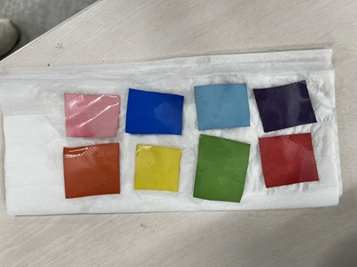
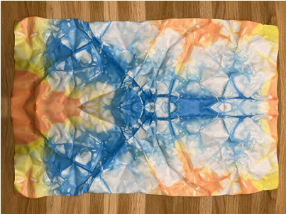

2023repurpose概要
使用済みの横断幕の再利用を試みるプロジェクト
素材：ターポリン
ターポリンは布地に塩化ビニルを混ぜ込んだ塩化ビニル系多層素材であり、
物理強度、耐久性に非常に優れている。耐水性能は高いが耐熱性脳が低い。
ターポリンの染色
染まりはするが表面・裏面で染まり方にムラがある。

絞り染め・タイダイ染め

ターポリンのしわが伸び無くなる為、染色する際は制作物に問題ないか確認する。
注意事項
レーザーカッター等の高温・発火の恐れのある機器の使用禁止